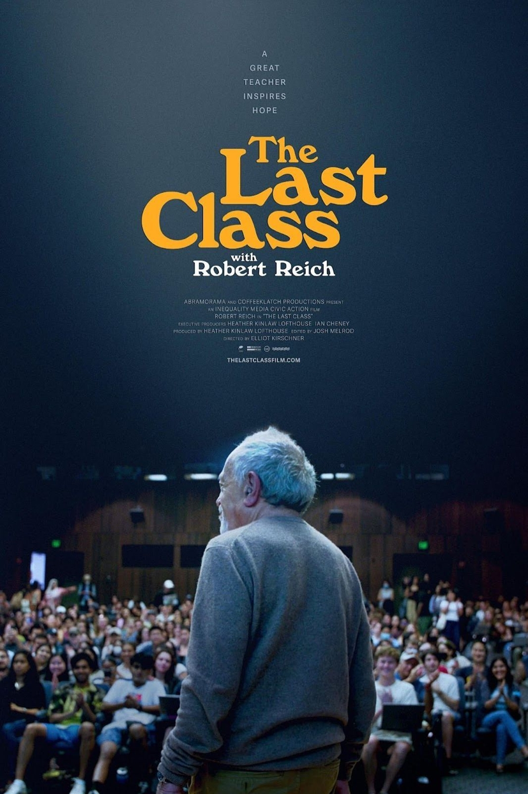
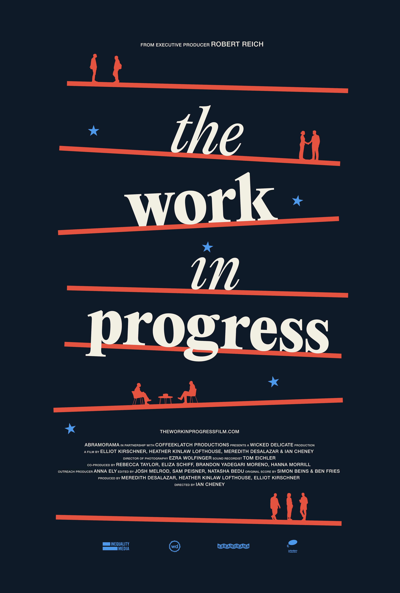
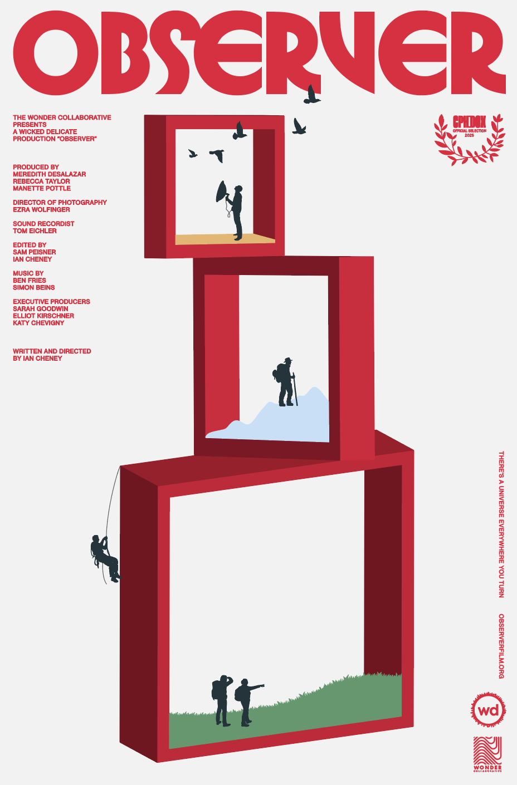
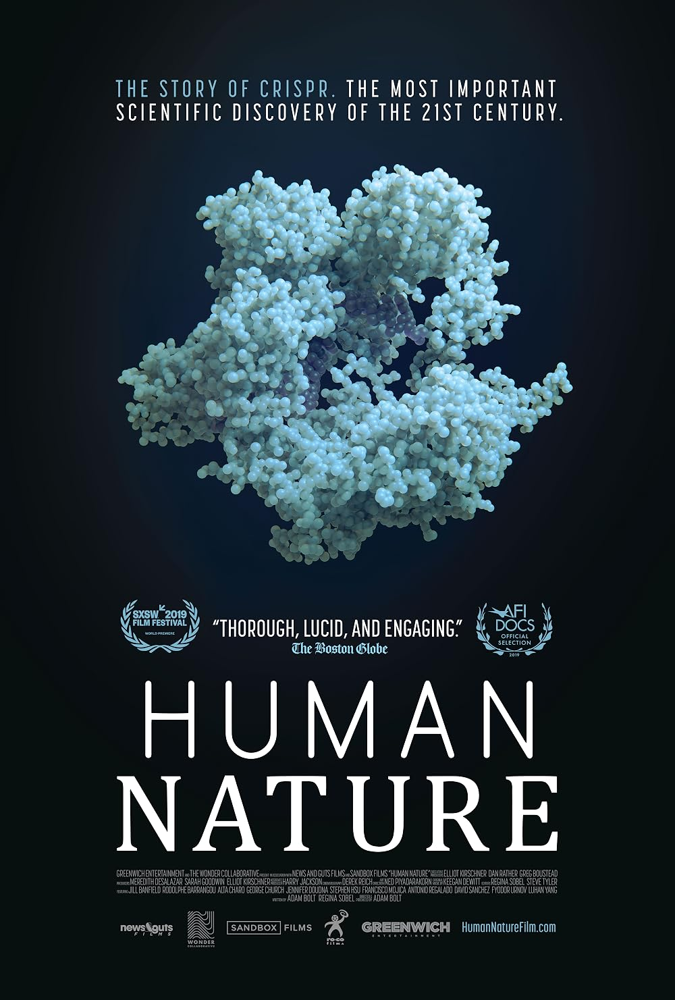
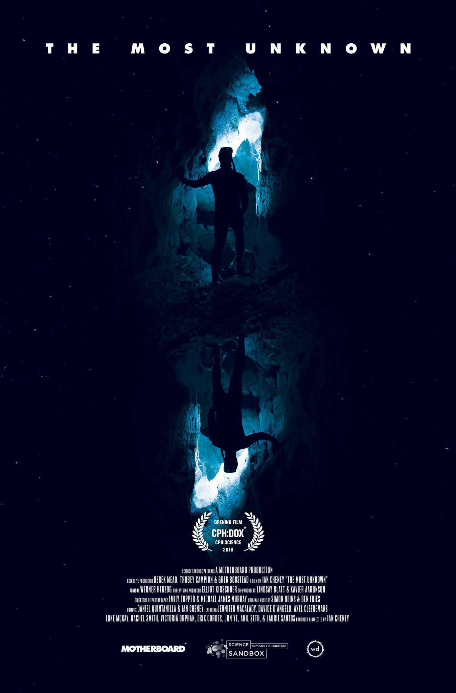

In his final semester at UC Berkeley, former U.S. Secretary of Labor Robert Reich reflects on inequality, democracy, and the responsibilities of citizenship while teaching one last class to a new generation.The Last Class
Director

In his final semester at UC Berkeley, former U.S. Secretary of Labor Robert Reich reflects on inequality, democracy, and the responsibilities of citizenship while teaching one last class to a new generation.
A team of filmmakers travels across the country, bringing together Americans from different generations and backgrounds for candid conversations about who we are, where the country has been, and where it might be headed.
A meditation on observation itself, following people whose work depends on learning how to notice, interpret, and make sense of the world with unusual care and attention.
The story of CRISPR, the breakthrough gene-editing technology that gives scientists unprecedented power to rewrite DNA, and the profound scientific and ethical questions that come with it.
Nine scientists step outside their own fields and into one another’s worlds, exploring some of the deepest unanswered questions in nature and discovering unexpected connections across disciplines.Read by 35,000+ subscribers, an idiosyncratic exploration of current events, history, art, science, and community.

Written with Dan Rather, this New York Times bestseller explores patriotism, citizenship, history, and American democracy.
Work across long-form and broadcast journalism, documentary and editorial leadership, and media and communications strategy.
Led a decade of work developing and producing feature documentaries and short films about science, scientists, and the role of science in society.
Senior producer of the weekly newsmagazine, shaping investigations and reporting on politics, international affairs, science, culture, and public life.
Produced for 60 Minutes, CBS Sunday Morning, and the CBS Evening News, covering stories in the United States and around the world.
Develops messaging, editorial direction, writing, and multimedia strategies for organizations and public figures. Work with Dan Rather has included founding and writing Steady, along with digital and social media strategy.